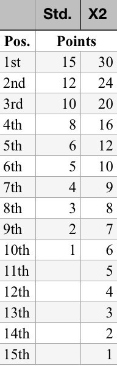
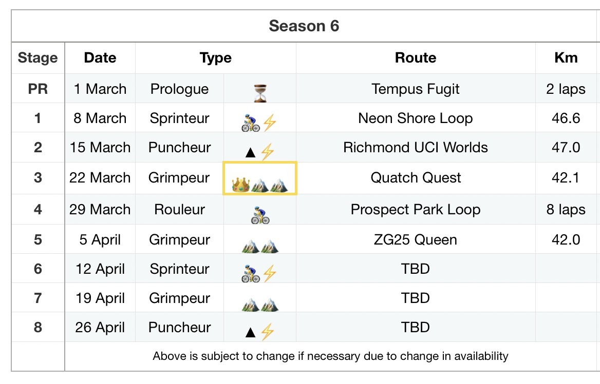

📌 Table of Contents
▶
Tip: Click a link to jump directly to a section.
🆕 Latest Changes
▶
Version 2.2 – 27 Feb 2026
- PR Development D Group added
- Rulebook layout refreshed for easier reading (TOC + visual improvements).
Version 2.1 – 18 Feb 2026
- Tiebreaker refinement: clarified and expanded season jersey hierarchy. Green and Red Jerseys now break ties by Yellow Jersey totals first; Yellow Jersey breaks ties by combined (Red + Green), then Green, then Red.
Version 2.0 – 06 Jan 2026
- Introduced a Zwift Racing Score–based points multiplier system.
- More accurate description of the Chase Multiplier System and the Stage Bonus Pot.
Version 1.9 – 04 Dec 2025
- Revised Chase Pot with multipliers for C & B groups and stage specific points.
Version 1.8 – 27 Nov 2025
- Updated Beacon WKG cap during Chase.
- Updated time gap between group starts to 2 min, from 3 min.
1 — Structure & Core Rules
▶
1.1 Overview
The Progression Riders (PR) Series is a multi-stage community race series consisting of 8 stages. Each season rewards tactical riding, teamwork, and consistency across multiple terrain profiles.
1.2 Groups
- D Group — expect lead beacon at 2.5 W/kg
- C Group — expect lead beacon at 3.2 W/kg
- B Group — expect lead beacon at 4.0 W/kg
- The early phase includes the Chase Pot — a dynamic inter-group bonus (see Section 2).
1.3 Rider Categories & Adjustments
- Progression Riders uses points multipliers to balance mixed-ability riders in C and B Group.
- Multipliers are based on your Zwift Racing Score (ZRS), rider category and the group you choose.
- Points are always earned on the road first, then adjusted afterward.
- A mid level rider in the natural group results in a multiplier close to 1.0×.
- Strong categroy B riders racing in C Group typically score ~0.6–0.8× points.
- Category A riders in B Group typically score ~0.7–0.8× points.
- Riders stepping up a group typically receive a small boost (~1.05–1.10×).
- Multipliers never affect in ride drafting, speed, or race dynamics.
- Riders on Zero-Point Stages ignore all multipliers.
- Choosing the correct group ensures fair competition and meaningful progression.
- Riders may switch groups during season. Following part is pending scoring troubleshooting: Mid-ride re-join entails a B rider re-joining on the C group before the 30 min Late Join option expires. This is intended for riders starting with B Group, but finding the pace too hard. Chase Pot Points are then not eligible and scoring of points will be solely from C Group and subject to potential scoring issues. Any resulting scoring issues are at your own risk.
- Points earned in one group apply only to that group’s leaderboard.
- Points cannot be transferred between groups.
- If a rider does not finish a stage, any points already earned remain valid.
- Rider category is determined post ride for the individual stage.
1.4 Jersey Classifications (by Terrain / Segment Type)
Three jerseys are contested, each linked to the type of segment (terrain or profile):
1.5 Stage Profiles
- Puncheur — Hilly; mix of Red & Green segments.
- Grimpeur — Mountain; favors Red & Yellow segments.
- Rouleur — Long steady efforts; favors Yellow segments.
- Sprinteur — Flat; favors Green segments.
1.6 Zero-Point Stage Rule (ZPS) — Mandatory
- Each rider must designate two ZPS per season.
- Non-attendance: Automatically counts as a ZPS.
- Declared ZPS Participation: Ride as desired but all points are nullified post ride (e.g., steal points from opposition, to support others or form alliances).
- Automatic Zero-Point Stage (ZPS) Clause: If a rider finishes a stage with 0 points across all jersey classifications (Yellow, Red, and Green), that stage will automatically count as one of the rider's designated Zero-Point Stages (ZPS).
- Deadline: Declare latest within 5 minutes of stage start.
- Irrevocable: Declarations cannot be revoked.
- Compliance: If two ZPS are not used by season end, the final one or two stages automatically count as ZPS.
- Communication: ZPS may be submitted privately to the stage beacons (cross-group secrecy allowed). There’s no limit to how early a stage can be declared a ZPS. No obligation to announce to other riders.
1.7 Communication & Results
All stage plans, segment details, and results are published via the PR Series official channels (website, Discord, or designated social posts).
1.8 — PR Development (Dev-D / D Group)
▶
🎯 Purpose
The Development Team is an academy group designed to prepare interested D riders for C-group through structured riding, shared segments, and progression incentives.
🔹 Ride Structure
- ⚡ ~2.5–2.7 w/kg
- ⏱ Starts 5 min before C
- 🗺 Same segments as other groups
- 🟡 except ALL points are Yellow only
☕ Coffee Break use (only for D group)
Otherwise respective points for the stage are voided.
🔁 D-Dev Sequence
- 1️⃣ Use [Dev] in name on stage to OPT IN (voluntary, only Cat D)
- 2️⃣ Win the stage overall and earn Stagiaire [STAG]
- 3️⃣ Start with C group following stage with STAG in name
- 4️⃣ Stay with C group until they catch D group to earn 🔵-tag in name for rest of the season
- 5️⃣ If dropped exit and rejoin D group to continue ride (optional)
- 6️⃣ If successful, points bonus earned for following season in C group [NEO] / [NEO+]. See below.
🎓 STAG (Stagiaire) Explained
- 🥇 Awarded to the stage top eligible Dev-D rider
- 🔒 Only Category D riders can earn STAG
- 🏷 Must include [DEV] in name on the ride to be eligible
- ➡️ If STAG is acquired ride with C group the following week and use STAG in name
🔵 Confirmed Stagiaire
- If the STAG rider stays with the C beacon until it reaches the D beacon, the STAG is Confirmed
- At that point, the rider may sit in with D or continue with C, at their own choice
- Rider earns a 🔵 prestige mark and Discord recognition. Use in name remainder of season.
🌟 Neo-Pro (NEO)
- 📆 FOLLOWING season, Confirmed riders (🔵) use NEO in name in C group
- ➕ Each 🔵 = +10% points [NEO], max +20% [NEO+]
- 🟡🟢🔴 Bonus applies to all points (Yellow / Green / Red)
- ⏳ Bonus is season-limited
💡 Key idea
2 — Groups & the Chase Pot
▶
2.1 Group Start Order
- D Group starts 5 minutes ahead of C Group.
- C Group starts 2 minutes ahead of B Group.
- B Group starts 2 minutes behind and begins with a chase of C Group.
- Each group has its own Yellow Beacon responsible for pacing and coordination.
- Every stage begins with a mandatory 5-minute warm-up, ramping gradually each minute before the official start.
2.2 The Chase Concept & Tactical Dynamics
The catch time determines a multiplier bonus to subsequent ride points based on how early/late they catch is completed.
- Break-even time for the multiplier is: B Group 17min. C Group 19min.
- C Group goal: cooperate to hold off the catch as long as possible, to maximise own multiplier and diminish B’s multiplier.
- B Group goal: cooperate to catch efficiently and maximize the multiplier to their favor.
- SEGMENTS CAN BE CONTESTED IN BOTH C AND B GROUP DURING THE CHASE IS IF SO ADVISED IN STAGE BRIEF OR BY BEACONS.
2.3 Stage Bonus Pot Value & Decay
- Initial Pot is stage dependent:
- Sprinteur stage: 🟩+🟩 = 13,2 pts / rider scoring green points.
- Puncheur stage: 🟩&🟥 = 6,6 pts respectively / rider scoring green and/or red points.
- Grimpeur stage: 🟥+🟥 = 13,2 pts / rider scoring red points.
- Rouleur stage: 🟨 = / rider according to the Rouleur Stage Table below.
- Riders points are multiplied according the table and graph shown below (There exists a specific table for Rouleur Stages).
- Rouleur Stage SPECIFIC Chase Pot:
- Rouleur stages primarily contribute to yellow points. The Rouleur Stage Bonus Pot is not tied to any specific segment; instead, it awards yellow points based on the distribution shown in the table and graph below. The Rouleur Stage Pot points are distributed directly to riders scoring points in subsequent YELLOW segments:
2.4 Catch Definition & Beacon Rules
- A catch is only valid once the two Yellow Beacons (B & C) are joined in the same visible group.
- Mixed riders alone do not constitute a catch.
- Beacons must stay with their own group and not ride off front or drop behind independently.
- Riders are encouraged to pull their respective group, keeping the Beacon protected in the draft.
- If a rider is dropped during the chase, that rider is still eligible for the Chase Pot, IF points are subsequently scored on Chase Pot relevant segments.
- Beacon WKG caps apply during the chase and are not to be intentionally exceeded.:
- C Beacon WKG cap: 3.2 W/kg
- B Beacon WKG cap: 4.0 W/kg
2.5 Stage Bonus Pot and multiplier Distribution
When the catch occurs (beacons joined), the multiplier is distributed to those C Group and B Group riders scoring points in the subsequent relevant segments. Riders on ZPS are excluded.
3 — Scoring & Points System
▶
3.1 Segment Types & Allocation
- 🟥 Red Segments (KOM / Hilly) — award points to climbing or puncheur efforts.
- 🟩 Green Segments (Sprint / Flat) — award points to high-speed efforts.
- 🟨 Yellow Segments — typically finish, longer climbs or Rouleur segments.
Each segment is assigned either FAL or FTS scoring for the stage:
- FAL (First Across the Line) — points by order crossing the segment line.
- FTS (Fastest Through Segment) — points for the fastest recorded times.
- FINishing segments are always FAL.
3.2 Points Distribution (as in PDF)

3.3 Finishing Points
- If utilized, finish banners always use FAL/FIN.
- The final segment may award higher points (e.g., Double Points ×2) for stage impact.
- Both groups receive equal finishing tables; adjustments for A/B/C status apply as per 1.3.
3.4 Tiebreakers
Stage (individual) tiebreakers:
- Most Yellow points on stage (total score)
- Finishing position
Season tiebreakers:
- Yellow Jersey: Highest (Red + Green) points → then highest Green → then highest Red.
- Green Jersey: Highest Yellow → then highest Red.
- Red Jersey: Highest Yellow → then highest Green.
- If still tied after all criteria: alphabetical by rider name.
3.5 Penalties & Invalid Results
- Riders kicked by fence → no segment points awarded post separation from beacon group (even if FAL was passed prior).
- Late joins (after segment start line) → eligible for FTS only, no FAL.
- Coffee Break usage: voids all earned points for the ride but does not qualify as a Zero-Point Stage (ZPS).
- Equipment restrictions → To be eligable for scoring points, heart rate recording is mandatory and ZPower is not accepted as valid power source.
3.6 Season Standings
- Cumulative totals are tracked for each jersey (🟥 Red, 🟩 Green, 🟨 Yellow).
- End-of-season winners are the riders with the highest totals per jersey after ZPS, rider category and tiebreaker adjustments.
3.7 Bonuses & Special Events
- Special Stages may be announced in-season.
- Team Bonuses may apply on cooperative stages (chase coordination or joint finishes).
- Details always appear in the Stage Brief at least 24 hours before start.
4 — General Etiquette & Conduct
▶
- Respect and read beacon instructions at all times.
- Maintain steady power when pulling at the front; avoid surging.
- Communication via Discord is encouraged for team coordination.
- No “Sticky Watts” with excessive power spikes on segments or during Chase.
- Stage leadership may determine unfair behavior.
- ALL segments and jersey competitions are voluntary. Regroups are facilitated between segments within the scope of the overall ride pace. No dedicated sweepers.
- Rejoin is open and available up to the 30-minute mark for riders dropped but wishing to continue with the Beacon group.
5 — Season Calendar & Stage Brief
▶
The current PR Season Calendar and Stage Brief are shown below. Both will always reflect the latest published versions.

Definitions: FAL, FTS, FIN
▶
FAL – First Across the Line (order of crossing).
FTS – Fastest Through Segment (time based).
FIN – Finishing banner; scored as FAL.